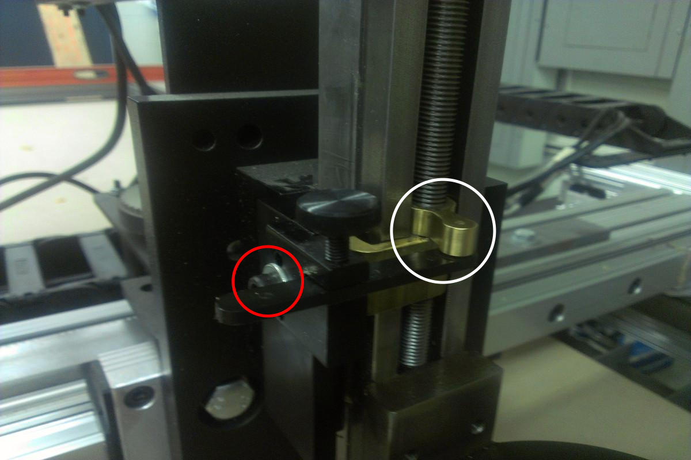
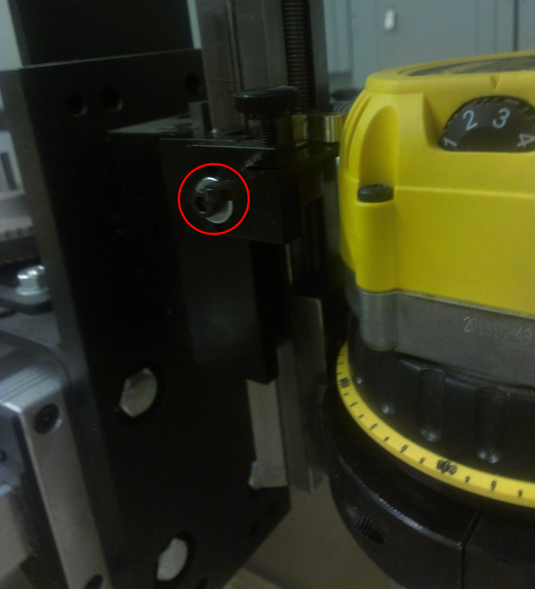

When the Z Axis Locks Itself
Yesterday Christalee and I started cutting some plywood boxes on the Torchmate 2 CNC router in her shop. I raised the Z-axis too far trying to get clearance, and we lost an hour figuring out how to unjam it. We couldn’t find notes on this problem online, so here they are.
Symptoms
Traveling upwards, the z-axis stops moving, and instead clicks. This is the sound of the stepper motor slipping. If you try to jog the axis down, the motor makes the same clicking sound, but the axis does not move.
Fixing It
The lead screw is jammed in its fixed nut, and the motor is not strong enough to unjam it. It can be fixed by removing the backlash adjustment arm, pressing on the brass nut, then reinstalling the adjustment arm.
In the photo below, the router has been removed (mostly because we didn’t know what we were doing, but it does make the photo easier to understand). The adjustment arm is held by one bolt, circled in red. It’s a cap-head which takes an allen wrench. After removing this bolt, the adjustment arm can be lowered away from the fixed nut, and removed. Do not unscrew the big screw between the two circles in the photo.

With the adjustment arm out of the way, you can press on the nut (circled in white) until it unjams. It did not take much force when I did it. Now reattach the adjustment arm, turning the nut so it catches the end of the arm as before.
Here’s another picture, with the router installed. Once again, the bolt to remove is circled in red.
